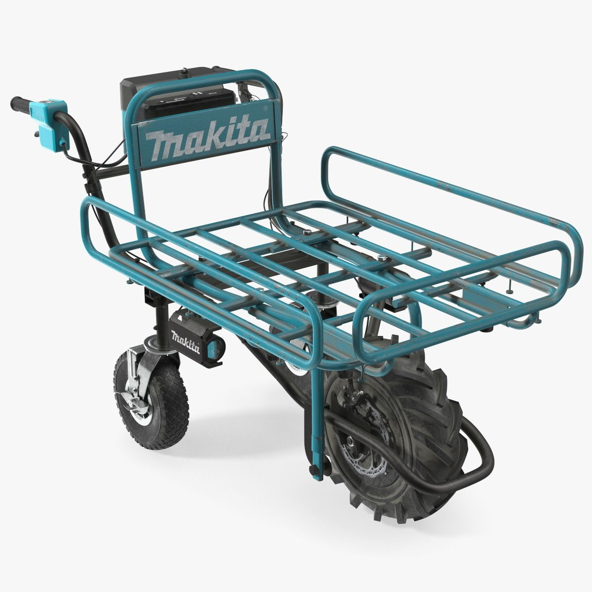
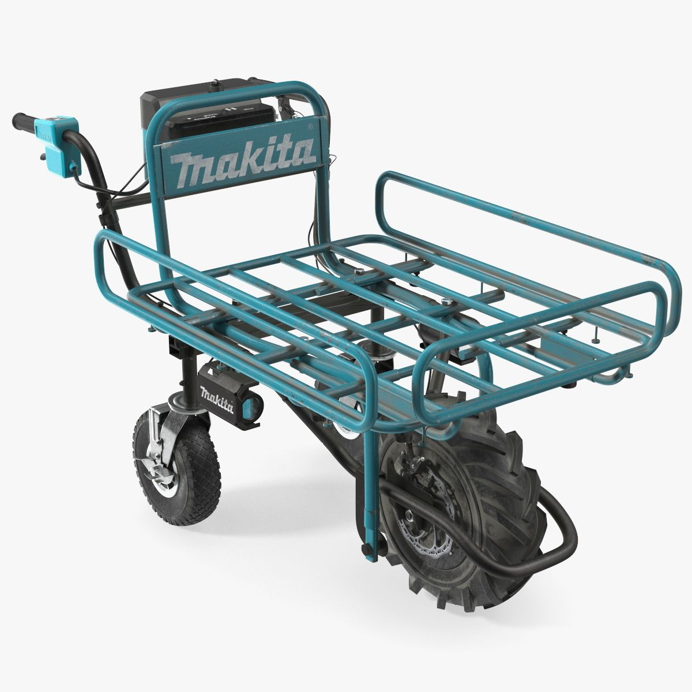

Produtos
O carrinho mão elétrico é uma solução moderna e eficiente para facilitar o transporte de materiais, como construção civil, agricultura e jardinagem. ele reduz significativamente o esforço físico do operador, tornando o trabalho mais ágil e produtivo.
Principais beneficios
Menos esforço físico: Elimina a necessidade de empurrar manualmente materiais pesados.
Maior eficiência: Permite transportar materiais com mais rapidez e segurança.
Sustentabilidade: Funciona com bateria recarregável.
Versatilidade: Pode ser usado para carregar areia, cimento, tijolos, adubo, entre outros.
Veiculos
 



O carrinho elétrico é um investimento inteligente para quem busca aumentar a produtividade e minimizar o desgaste físico no trabalho diário. Com sua tecnologia inovadora, ele se torna um aliado indispensável para profissionais e empresas que lidam com transporte de materiais pesados.
Tipo De Conexões

🔋 Baterias são recarregadas com carregador de 48V.
⚙️ Modos de Operação – Pode ser usado no modo eletrico ou manualmente, adaptando-se às necessidades do usuário.
Essa tecnologia torna o carrinho elétrico ainda mais versátil e eficiente, sendo perfeito para construção civil, agricultura, jardinagem e logística. Com ele, transportar materiais nunca foi tão fácil!